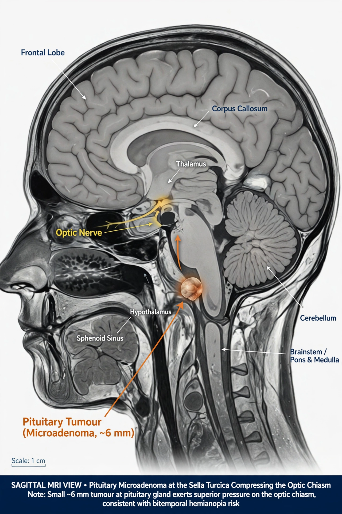

| Specialty | Endocrinology, neurosurgery |
| Location | Pituitary gland (sella turcica) |
| Types | Functioning / non-functioning; micro- (<10 mm) / macroadenoma |
| Symptoms | Hormone excess or deficiency, visual field loss, headache |
| Treatment | Medication, transsphenoidal surgery, radiotherapy |

Pituitary adenomas are benign tumours of the anterior pituitary gland. They are among the most common intracranial neoplasms, accounting for roughly 10–15 per cent of diagnosed brain tumours, and small asymptomatic adenomas ("incidentalomas") are found in a substantial fraction of autopsy and imaging series. Most are sporadic; a minority occur in genetic syndromes such as multiple endocrine neoplasia type 1 (MEN1).
Adenomas are classified by size — microadenomas are under 10 mm and macroadenomas 10 mm or larger — and by hormonal activity. Functioning adenomas secrete excess hormone: prolactinomas (the most common type) cause galactorrhoea and hypogonadism; somatotroph adenomas cause acromegaly or gigantism through growth hormone excess; corticotroph adenomas cause Cushing's disease; thyrotroph adenomas are rare. Non-functioning adenomas do not secrete clinically significant hormone and usually present through mass effect.
Expanding macroadenomas compress neighbouring structures. Upward growth presses on the optic chiasm, classically producing bitemporal hemianopsia (loss of the outer visual fields). Pressure on the normal gland causes hypopituitarism; invasion of the cavernous sinus may affect cranial nerves III, IV and VI. Sudden haemorrhage or infarction within a tumour — pituitary apoplexy — is an emergency causing severe headache, visual loss and acute adrenal insufficiency.
Diagnosis combines MRI of the sella with a full pituitary hormone panel and formal visual-field testing. Prolactinomas are treated first-line with dopamine agonists such as cabergoline, which usually shrink the tumour. Most other symptomatic adenomas are removed by transsphenoidal surgery through the nose and sphenoid sinus. Residual or recurrent disease may be managed with medication (somatostatin analogues, pegvisomant) or stereotactic radiotherapy, with lifelong endocrine follow-up.